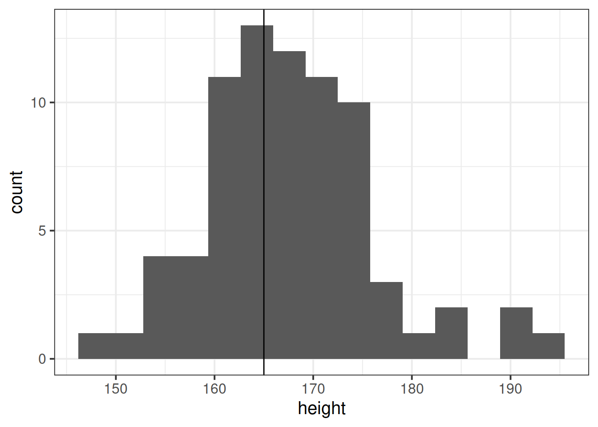
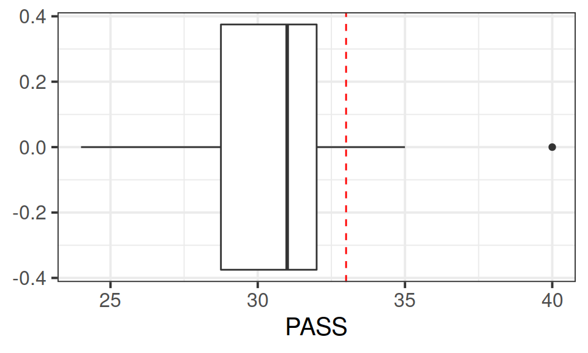

Research Question Do Edinburgh University students report endorsing procrastination less than the norm?
The Procrastination Assessment Scale for Students (PASS) was designed to assess how individuals approach decision situations, specifically the tendency of individuals to postpone decisions (see Solomon & Rothblum, 1984). The PASS assesses the prevalence of procrastination in six areas: writing a paper; studying for an exam; keeping up with reading; administrative tasks; attending meetings; and performing general tasks. For a measure of total endorsement of procrastination, responses to 18 questions (each measured on a 1-5 scale) are summed together, providing a single score for each participant (range 0 to 90). The mean score from Solomon & Rothblum, 1984 was 33.
Conduct a one sample \(t\)-test to evaluate whether Edinburgh University students’ average score on the PASS is less than 33. Remember to check the assumptions!
Hint: Think carefully about the wording of the research question. Is the alternative hypothesis “less than”, “greater than” or “not equal to”? What does this mean in relation to the areas of the \(t\)-distribution for which you will reject the null hypothesis - upper tail, lower tail, or both tails? Check out the help page for t.test() - is there some thing you can change to make sure it is the correct option?
t.test(pass_scores$PASS, mu =33, alternative ="less")
One Sample t-test
data: pass_scores$PASS
t = -3.1073, df = 19, p-value = 0.0029
alternative hypothesis: true mean is less than 33
95 percent confidence interval:
-Inf 31.9799
sample estimates:
mean of x
30.7
Question 2
Write up the results.
Solution
A one-sided one-sample t-test was conducted in order to determine if the average score on the Procrastination Assessment Scale for Students (PASS) for a sample of 20 students at Edinburgh University was significantly lower (\(\alpha = .05\)) than the average score obtained during development of the PASS.
Edinburgh University students scored lower (Mean = 30.7, SD = 3.31) than the score reported by the authors of the PASS (Mean = 33). This difference was statistically significant (t(19)=-3.11, p < .05, one-tailed).
Research Question Is the average height of students taking the USMR statistic course in Psychology at Edinburgh University in 2021/2022 is different from 165cm?
Conduct a one sample \(t\)-test to evaluate whether the average height of students taking the USMR courses in Psychology at Edinburgh University in 2022/23 is different from 165cm.
Remember: We should check that the data meet the assumptions of our test.
This means you will need to investigate the extent to which the sample data appears to have been drawn from a normal distribution. However, this is real data, and real data is rarely normal! If you conduct a Shapiro-Wilk test, you may well find \(p<.05\) and conclude that your data is not normal.
So what do we do if a test indicates our assumptions are violated?
Well, we should bear a couple of things in mind.
A decision rule such as \(p<.05\) on Shapiro-Wilk test creates very dichotomous thinking for something which is in reality not black and white. Real life distributions are not either normal or non-normal. Plot the data, and make a judgement!
As it happens, the t-test is actually reasonably robust against slight deviations from normality! Plot your data and make a judgement!
The deeper you get into statistics, the more you discover that it is not simply a case of following step-by-step rules:
Solution
survey_data <-read_csv("https://uoepsy.github.io/data/surveydata_allcourse22.csv")survey_data <- survey_data %>%filter(year==2021)#the shapiro.test suggests that our assumption of normality may be violated!! oh no!shapiro.test(survey_data$height)
Shapiro-Wilk normality test
data: survey_data$height
W = 0.96667, p-value = 0.04306
# However, let's have a histogram to check how non-normal our data is. # let's also add our hypothesised mean on there as a vertical line:ggplot(data = survey_data, aes(x = height)) +geom_histogram(bins=15) +geom_vline(xintercept =165)

# The t.test is quite robust against slight violations of normality.# Our data here doesn't look too non-normal (This is just a judgement call here!).# Let's proceed with the t.testt.test(survey_data$height, mu =165, alternative ="two.sided")
One Sample t-test
data: survey_data$height
t = 2.5707, df = 75, p-value = 0.01213
alternative hypothesis: true mean is not equal to 165
95 percent confidence interval:
165.5837 169.6029
sample estimates:
mean of x
167.5933
Two Samples
Research Question Can a server earn higher tips simply by introducing themselves by name when greeting customers?
Researchers investigated the effect of a server introducing herself by name on restaurant tipping. The study involved forty, 2-person parties eating a $23.21 fixed-price buffet Sunday brunch at Charley Brown’s Restaurant in Huntington Beach, California, on April 10 and 17, 1988. Each two-person party was randomly assigned by the waitress to either a name or a no name introduction condition using a random mechanism. The waitress kept track of the two-person party condition and how much the party paid at the end of the meal.
Conduct an independent samples \(t\)-test to assess whether higher tips are earned when the server introduces themselves by name, in comparison to when they do not.
Hints:
We’ll want to check the normality (either visually or with a test) of the variable of interest for each group.
Some researchers suggest using the Welch t-test by default. This means you can relax the assumption of equal variances in the groups. If you want to test whether two variances are equal, try the var.test() function.
Solution
tipdata <-read_csv("https://uoepsy.github.io/data/gerritysim.csv")#make a "tip" column, which is minus the meal amounttipdata <- tipdata %>%mutate(tip = paid -23.21 )ggplot(data = tipdata, aes(x = tip, y = condition)) +geom_boxplot()

check assumptions
According to these tests, we have normally distributed data for both groups, with equal variances.
Shapiro-Wilk normality test
data: tipdata$tip[tipdata$condition == "no name"]
W = 0.94405, p-value = 0.2857
with(tipdata, var.test(tip ~ condition))
F test to compare two variances
data: tip by condition
F = 1.9344, num df = 19, denom df = 19, p-value = 0.1595
alternative hypothesis: true ratio of variances is not equal to 1
95 percent confidence interval:
0.7656473 4.8870918
sample estimates:
ratio of variances
1.93437
conduct t-test
Because the variances do not appear to be unequal, we can actually use the standard t-test with var.equal = TRUE if we want. However, we’ll continue with the Welch t-test.
Remember that our alternative hypothesis here is that the average tips in the “name” condition is greater than in the “no name” condition.
R will take the levels in order here (alphabetically), and assume that the alternative is for that group, so we use alternative = "greater" here to say that the alternative is \(\text{name}-\text{no name} > 0\).
with(tipdata, t.test(tip ~ condition, alternative ="greater"))
Welch Two Sample t-test
data: tip by condition
t = 3.4117, df = 34.502, p-value = 0.0008314
alternative hypothesis: true difference in means between group name and group no name is greater than 0
95 percent confidence interval:
0.8893105 Inf
sample estimates:
mean in group name mean in group no name
4.9450 3.1825